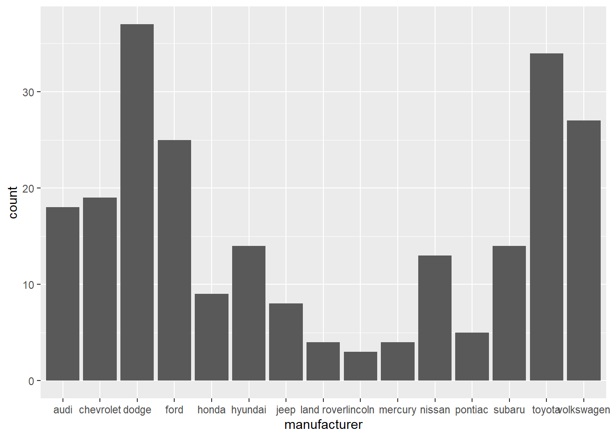
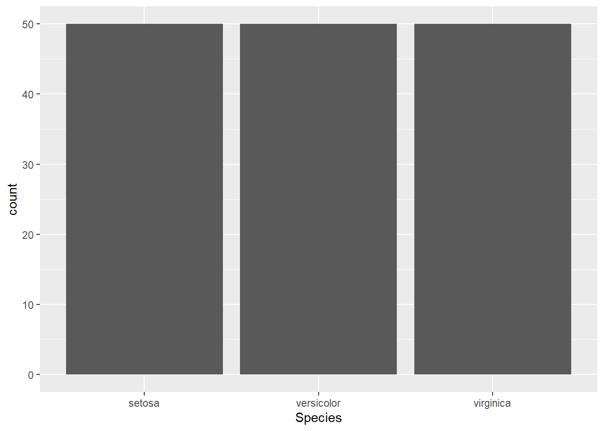

# Save packages as a vector
all.lib<-c("tidyverse","ggplot2", "dplyr","tidyr","modelr")
# Load packages
lapply(all.lib,require,character.only=TRUE)Exploratory Data Analysis
Setup
Introduction:
Steps to exploratory data analysis:
- Generate questions and hypothesis about the data.
- Understand your data
- Read the metadata if the data is not yours
- Think about the analysis plan led by questions
- Make sure your hypothesis-driven studies are clearly stated
Load your data: Example 1
a. Fuel economy data from 1999 to 2008 for 38 popular models of cars. The subset dataset from EPA. Full data available [here](https://fueleconomy.gov)
# Load data
data("mpg")
mpg# A tibble: 234 × 11
manufacturer model displ year cyl trans drv cty hwy fl class
<chr> <chr> <dbl> <int> <int> <chr> <chr> <int> <int> <chr> <chr>
1 audi a4 1.8 1999 4 auto… f 18 29 p comp…
2 audi a4 1.8 1999 4 manu… f 21 29 p comp…
3 audi a4 2 2008 4 manu… f 20 31 p comp…
4 audi a4 2 2008 4 auto… f 21 30 p comp…
5 audi a4 2.8 1999 6 auto… f 16 26 p comp…
6 audi a4 2.8 1999 6 manu… f 18 26 p comp…
7 audi a4 3.1 2008 6 auto… f 18 27 p comp…
8 audi a4 quattro 1.8 1999 4 manu… 4 18 26 p comp…
9 audi a4 quattro 1.8 1999 4 auto… 4 16 25 p comp…
10 audi a4 quattro 2 2008 4 manu… 4 20 28 p comp…
# … with 224 more rows
# ℹ Use `print(n = ...)` to see more rowsExploring the data
# Useful functions in exploring the data
ncol(mpg)[1] 11nrow(mpg)[1] 234dim(mpg)[1] 234 11str(mpg)tibble [234 × 11] (S3: tbl_df/tbl/data.frame)
$ manufacturer: chr [1:234] "audi" "audi" "audi" "audi" ...
$ model : chr [1:234] "a4" "a4" "a4" "a4" ...
$ displ : num [1:234] 1.8 1.8 2 2 2.8 2.8 3.1 1.8 1.8 2 ...
$ year : int [1:234] 1999 1999 2008 2008 1999 1999 2008 1999 1999 2008 ...
$ cyl : int [1:234] 4 4 4 4 6 6 6 4 4 4 ...
$ trans : chr [1:234] "auto(l5)" "manual(m5)" "manual(m6)" "auto(av)" ...
$ drv : chr [1:234] "f" "f" "f" "f" ...
$ cty : int [1:234] 18 21 20 21 16 18 18 18 16 20 ...
$ hwy : int [1:234] 29 29 31 30 26 26 27 26 25 28 ...
$ fl : chr [1:234] "p" "p" "p" "p" ...
$ class : chr [1:234] "compact" "compact" "compact" "compact" ...summary(mpg) manufacturer model displ year
Length:234 Length:234 Min. :1.600 Min. :1999
Class :character Class :character 1st Qu.:2.400 1st Qu.:1999
Mode :character Mode :character Median :3.300 Median :2004
Mean :3.472 Mean :2004
3rd Qu.:4.600 3rd Qu.:2008
Max. :7.000 Max. :2008
cyl trans drv cty
Min. :4.000 Length:234 Length:234 Min. : 9.00
1st Qu.:4.000 Class :character Class :character 1st Qu.:14.00
Median :6.000 Mode :character Mode :character Median :17.00
Mean :5.889 Mean :16.86
3rd Qu.:8.000 3rd Qu.:19.00
Max. :8.000 Max. :35.00
hwy fl class
Min. :12.00 Length:234 Length:234
1st Qu.:18.00 Class :character Class :character
Median :24.00 Mode :character Mode :character
Mean :23.44
3rd Qu.:27.00
Max. :44.00 head(mpg)# A tibble: 6 × 11
manufacturer model displ year cyl trans drv cty hwy fl class
<chr> <chr> <dbl> <int> <int> <chr> <chr> <int> <int> <chr> <chr>
1 audi a4 1.8 1999 4 auto(l5) f 18 29 p compa…
2 audi a4 1.8 1999 4 manual(m5) f 21 29 p compa…
3 audi a4 2 2008 4 manual(m6) f 20 31 p compa…
4 audi a4 2 2008 4 auto(av) f 21 30 p compa…
5 audi a4 2.8 1999 6 auto(l5) f 16 26 p compa…
6 audi a4 2.8 1999 6 manual(m5) f 18 26 p compa…tail(mpg)# A tibble: 6 × 11
manufacturer model displ year cyl trans drv cty hwy fl class
<chr> <chr> <dbl> <int> <int> <chr> <chr> <int> <int> <chr> <chr>
1 volkswagen passat 1.8 1999 4 auto(l5) f 18 29 p mids…
2 volkswagen passat 2 2008 4 auto(s6) f 19 28 p mids…
3 volkswagen passat 2 2008 4 manual(m6) f 21 29 p mids…
4 volkswagen passat 2.8 1999 6 auto(l5) f 16 26 p mids…
5 volkswagen passat 2.8 1999 6 manual(m5) f 18 26 p mids…
6 volkswagen passat 3.6 2008 6 auto(s6) f 17 26 p mids…Load your data: Example 2
b. Flow of the River Nile, measurements of the annual flow of the river Nile at Aswan from Balke, N. S. (1993) and Cobb, G. W. (1978)
Another example of time series data
data("Nile")
head(Nile)[1] 1120 1160 963 1210 1160 1160table(Nile)Nile
456 649 676 692 694 698 701 702 714 718 726 740 742 744 746 749
1 1 1 1 1 1 1 1 1 1 1 1 1 2 1 1
759 764 768 771 774 781 796 797 799 801 812 813 815 821 822 824
1 1 1 1 1 1 1 1 1 1 1 1 1 1 1 1
831 832 833 838 840 845 846 848 860 862 864 865 874 890 897 901
1 1 1 1 1 3 1 1 1 1 1 1 2 1 1 1
906 912 916 918 919 923 935 940 944 958 960 963 969 975 984 986
1 1 1 1 1 1 1 1 1 1 1 1 1 1 1 1
994 995 1010 1020 1030 1040 1050 1100 1110 1120 1140 1150 1160 1170 1180 1210
1 1 1 3 1 2 2 3 1 2 2 1 3 1 1 2
1220 1230 1250 1260 1370
1 1 1 1 1 Creating a tibble
data <- data.frame(a = 1:3, b = letters[1:3], c = Sys.Date() - 1:3)
data a b c
1 1 a 2023-08-03
2 2 b 2023-08-02
3 3 c 2023-08-01#> a b c
#> 1 1 a 2023-02-21
#> 2 2 b 2023-02-20
#> 3 3 c 2023-02-19
as_tibble(data)# A tibble: 3 × 3
a b c
<int> <chr> <date>
1 1 a 2023-08-03
2 2 b 2023-08-02
3 3 c 2023-08-01#> # A tibble: 3 × 3
#> a b c
#> <int> <chr> <date>
#> 1 1 a 2023-02-21
#> 2 2 b 2023-02-20
#> 3 3 c 2023-02-19
## Creating a tibble from preloaded dataset
data(iris)
head(iris) Sepal.Length Sepal.Width Petal.Length Petal.Width Species
1 5.1 3.5 1.4 0.2 setosa
2 4.9 3.0 1.4 0.2 setosa
3 4.7 3.2 1.3 0.2 setosa
4 4.6 3.1 1.5 0.2 setosa
5 5.0 3.6 1.4 0.2 setosa
6 5.4 3.9 1.7 0.4 setosaas_tibble(iris)# A tibble: 150 × 5
Sepal.Length Sepal.Width Petal.Length Petal.Width Species
<dbl> <dbl> <dbl> <dbl> <fct>
1 5.1 3.5 1.4 0.2 setosa
2 4.9 3 1.4 0.2 setosa
3 4.7 3.2 1.3 0.2 setosa
4 4.6 3.1 1.5 0.2 setosa
5 5 3.6 1.4 0.2 setosa
6 5.4 3.9 1.7 0.4 setosa
7 4.6 3.4 1.4 0.3 setosa
8 5 3.4 1.5 0.2 setosa
9 4.4 2.9 1.4 0.2 setosa
10 4.9 3.1 1.5 0.1 setosa
# … with 140 more rows
# ℹ Use `print(n = ...)` to see more rows# Saving the tibble a new dataset
iris.updated<-as_tibble(iris)Finding patterns in data through visualization and transformations
Categorical variable
Using geom_bar for displaying categorical variable,
ggplot(data = mpg) +
geom_bar(mapping = aes(x = manufacturer))
Using the same above example for iris dataset, using the categorical variable,
ggplot(data = iris) +
geom_bar(mapping = aes(x = Species))
Notice how the bars are equal because the y axis that shows the count is same (i.e 50) for each of the species.
Count function
The height of the bars displays how many observations occurred with each x value.
mpg %>%
count(manufacturer)# A tibble: 15 × 2
manufacturer n
<chr> <int>
1 audi 18
2 chevrolet 19
3 dodge 37
4 ford 25
5 honda 9
6 hyundai 14
7 jeep 8
8 land rover 4
9 lincoln 3
10 mercury 4
11 nissan 13
12 pontiac 5
13 subaru 14
14 toyota 34
15 volkswagen 27iris.updated %>%
count(Species)# A tibble: 3 × 2
Species n
<fct> <int>
1 setosa 50
2 versicolor 50
3 virginica 50Continuous variable
Using geom_bar for a continuous variable,
ggplot(data = iris.updated) +
geom_bar(mapping = aes(x = Sepal.Length))
Using histogram is better here for continuous variable,
iris.updated %>%
ggplot()+
geom_histogram(mapping = aes(x = Sepal.Length),binwidth= 0.1)
Using mpg dataset,
mpg %>%
ggplot()+
geom_histogram(mapping = aes(x = displ), binwidth = 0.5)
cut_width function
Display how the histogram was made
For iris dataset,
iris.updated %>%
count(cut_width(Sepal.Length, 0.1))# A tibble: 35 × 2
`cut_width(Sepal.Length, 0.1)` n
<fct> <int>
1 [4.25,4.35] 1
2 (4.35,4.45] 3
3 (4.45,4.55] 1
4 (4.55,4.65] 4
5 (4.65,4.75] 2
6 (4.75,4.85] 5
7 (4.85,4.95] 6
8 (4.95,5.05] 10
9 (5.05,5.15] 9
10 (5.15,5.25] 4
# … with 25 more rows
# ℹ Use `print(n = ...)` to see more rowsFor mpg dataset,
mpg %>%
count(cut_width(displ, 0.5))# A tibble: 12 × 2
`cut_width(displ, 0.5)` n
<fct> <int>
1 [1.25,1.75] 5
2 (1.75,2.25] 44
3 (2.25,2.75] 41
4 (2.75,3.25] 24
5 (3.25,3.75] 23
6 (3.75,4.25] 30
7 (4.25,4.75] 29
8 (4.75,5.25] 7
9 (5.25,5.75] 23
10 (5.75,6.25] 6
11 (6.25,6.75] 1
12 (6.75,7.25] 1- Note here that the numbers correspond to the binwidth used in each histogram
Filter function
smaller dataset by filtering. The filter function evaluates a condition inside the bracket.
mpg %>%
filter(cty >20)# A tibble: 45 × 11
manufacturer model displ year cyl trans drv cty hwy fl class
<chr> <chr> <dbl> <int> <int> <chr> <chr> <int> <int> <chr> <chr>
1 audi a4 1.8 1999 4 manual(m… f 21 29 p comp…
2 audi a4 2 2008 4 auto(av) f 21 30 p comp…
3 chevrolet malibu 2.4 2008 4 auto(l4) f 22 30 r mids…
4 honda civic 1.6 1999 4 manual(m… f 28 33 r subc…
5 honda civic 1.6 1999 4 auto(l4) f 24 32 r subc…
6 honda civic 1.6 1999 4 manual(m… f 25 32 r subc…
7 honda civic 1.6 1999 4 manual(m… f 23 29 p subc…
8 honda civic 1.6 1999 4 auto(l4) f 24 32 r subc…
9 honda civic 1.8 2008 4 manual(m… f 26 34 r subc…
10 honda civic 1.8 2008 4 auto(l5) f 25 36 r subc…
# … with 35 more rows
# ℹ Use `print(n = ...)` to see more rowsmpg.sub<- mpg %>%
filter(cty >20)iris.updated %>%
filter(Petal.Width > 1)# A tibble: 93 × 5
Sepal.Length Sepal.Width Petal.Length Petal.Width Species
<dbl> <dbl> <dbl> <dbl> <fct>
1 7 3.2 4.7 1.4 versicolor
2 6.4 3.2 4.5 1.5 versicolor
3 6.9 3.1 4.9 1.5 versicolor
4 5.5 2.3 4 1.3 versicolor
5 6.5 2.8 4.6 1.5 versicolor
6 5.7 2.8 4.5 1.3 versicolor
7 6.3 3.3 4.7 1.6 versicolor
8 6.6 2.9 4.6 1.3 versicolor
9 5.2 2.7 3.9 1.4 versicolor
10 5.9 3 4.2 1.5 versicolor
# … with 83 more rows
# ℹ Use `print(n = ...)` to see more rowsiris.sub<- iris.updated %>%
filter(Petal.Width >1)Plotting a subset of the dataset,
# plotting
ggplot(data = mpg.sub, mapping = aes(x = cty)) +
geom_histogram(binwidth = 0.25)# plotting
ggplot(data = iris.sub, mapping = aes(x = Petal.Width)) +
geom_histogram(binwidth = 0.1)Expanding the x-y limits
# Seeing unusual values
ggplot(mpg) +
geom_histogram(mapping = aes(x = displ), binwidth = 0.5)+
coord_cartesian(ylim = c(0, 50), xlim=c(0,100))Select function
Used for subsetting a dataset, by selecting column names,
mpg.filtered1 <- mpg %>%
filter(cty < 10 | cty > 15) %>%
select(manufacturer,cty, displ)
mpg.filtered1# A tibble: 142 × 3
manufacturer cty displ
<chr> <int> <dbl>
1 audi 18 1.8
2 audi 21 1.8
3 audi 20 2
4 audi 21 2
5 audi 16 2.8
6 audi 18 2.8
7 audi 18 3.1
8 audi 18 1.8
9 audi 16 1.8
10 audi 20 2
# … with 132 more rows
# ℹ Use `print(n = ...)` to see more rowsArrange function
Sorts in ascending order by the column name provided,
mpg.filtered2.asc <- mpg %>%
filter(cty < 10 | cty > 15) %>%
select(manufacturer,cty, displ) %>%
arrange(cty)
mpg.filtered2.asc# A tibble: 142 × 3
manufacturer cty displ
<chr> <int> <dbl>
1 dodge 9 4.7
2 dodge 9 4.7
3 dodge 9 4.7
4 dodge 9 4.7
5 jeep 9 4.7
6 audi 16 2.8
7 audi 16 1.8
8 audi 16 4.2
9 chevrolet 16 5.7
10 chevrolet 16 6.2
# … with 132 more rows
# ℹ Use `print(n = ...)` to see more rowsUsing arrange to sort in descending order, use the function across within arrange.
Note remember you can nest the functions within another function.
mpg.filtered2.dsc <- mpg %>% filter(cty < 10 | cty > 15) %>% select(manufacturer,cty, displ) %>% arrange(across(cty,desc)) mpg.filtered2.dsc# A tibble: 142 × 3 manufacturer cty displ <chr> <int> <dbl> 1 volkswagen 35 1.9 2 volkswagen 33 1.9 3 volkswagen 29 1.9 4 honda 28 1.6 5 toyota 28 1.8 6 honda 26 1.8 7 toyota 26 1.8 8 toyota 26 1.8 9 honda 25 1.6 10 honda 25 1.8 # … with 132 more rows # ℹ Use `print(n = ...)` to see more rows
Mutate function
Used for adding more columns using a condition. Note here that the notation for
ifelse(CONDITION, VALUE_IF_TRUE, VALUE_IF_FALSE)# Mutate - add more columns
mpg.filtered3 <- mpg.filtered2.asc %>%
mutate(newcol = ifelse(cty < 10, NA, 0))
mpg.filtered3# A tibble: 142 × 4
manufacturer cty displ newcol
<chr> <int> <dbl> <dbl>
1 dodge 9 4.7 NA
2 dodge 9 4.7 NA
3 dodge 9 4.7 NA
4 dodge 9 4.7 NA
5 jeep 9 4.7 NA
6 audi 16 2.8 0
7 audi 16 1.8 0
8 audi 16 4.2 0
9 chevrolet 16 5.7 0
10 chevrolet 16 6.2 0
# … with 132 more rows
# ℹ Use `print(n = ...)` to see more rowsYou can add multiple columns using mutate function,
iris.updated %>%
mutate(order.name="Asparagales",
height=Sepal.Length*5)# A tibble: 150 × 7
Sepal.Length Sepal.Width Petal.Length Petal.Width Species order.name height
<dbl> <dbl> <dbl> <dbl> <fct> <chr> <dbl>
1 5.1 3.5 1.4 0.2 setosa Asparagales 25.5
2 4.9 3 1.4 0.2 setosa Asparagales 24.5
3 4.7 3.2 1.3 0.2 setosa Asparagales 23.5
4 4.6 3.1 1.5 0.2 setosa Asparagales 23
5 5 3.6 1.4 0.2 setosa Asparagales 25
6 5.4 3.9 1.7 0.4 setosa Asparagales 27
7 4.6 3.4 1.4 0.3 setosa Asparagales 23
8 5 3.4 1.5 0.2 setosa Asparagales 25
9 4.4 2.9 1.4 0.2 setosa Asparagales 22
10 4.9 3.1 1.5 0.1 setosa Asparagales 24.5
# … with 140 more rows
# ℹ Use `print(n = ...)` to see more rowsBoxplot
Using function geom_boxplot to look at trends in data,
# Boxplot
ggplot(data = mpg, mapping = aes(x = manufacturer, y = hwy)) +
geom_boxplot()+
xlab("highway miles")+
ylab("manufacturer")Reorder function
- Using function reorder to see a clear trend.
- Note that reorder is a special case of the function factor.
- The factor function is in base R and is used for ordering vector data.
# Easy to see trend
ggplot(data = mpg) +
geom_boxplot(mapping = aes(x = reorder(manufacturer, hwy, FUN = median), y = hwy))+
xlab("highway miles")+
ylab("manufacturer")Flip the coordinates
# Flip coordinates
ggplot(data = mpg) +
geom_boxplot(mapping = aes(x = reorder(manufacturer, hwy, FUN = median), y = hwy))+
coord_flip()+
xlab("highway miles")+
ylab("manufacturer")
Scatterplot of the data
Geom point is used for looking at a scatterplot,
# Scatterplot
ggplot(data = mpg) +
geom_point(mapping = aes(x = manufacturer, y = hwy))+
xlab("highway miles")+
ylab("manufacturer")Finding patterns in data through modelling
Refine the questions based on what you learn and repeat the process. Let’s ask a new question.
How highway miles are varying with city miles?
# How highway miles are varying with city miles
ggplot(data = mpg)+
geom_point(mapping = aes(x = hwy,y=cty))+
xlab("highway miles")+
ylab("city miles")Linear regression
Are highway miles linearly related with city miles?
Defining a linear model
lm(hwy~cty,data = mpg)
Call:
lm(formula = hwy ~ cty, data = mpg)
Coefficients:
(Intercept) cty
0.892 1.337 model1<-lm(hwy~cty,data = mpg)
summary(model1)
Call:
lm(formula = hwy ~ cty, data = mpg)
Residuals:
Min 1Q Median 3Q Max
-5.3408 -1.2790 0.0214 1.0338 4.0461
Coefficients:
Estimate Std. Error t value Pr(>|t|)
(Intercept) 0.89204 0.46895 1.902 0.0584 .
cty 1.33746 0.02697 49.585 <2e-16 ***
---
Signif. codes: 0 '***' 0.001 '**' 0.01 '*' 0.05 '.' 0.1 ' ' 1
Residual standard error: 1.752 on 232 degrees of freedom
Multiple R-squared: 0.9138, Adjusted R-squared: 0.9134
F-statistic: 2459 on 1 and 232 DF, p-value: < 2.2e-16plot(model1)# Other useful functions
coefficients(model1) # model coefficients(Intercept) cty
0.8920411 1.3374556 confint(model1, level=0.95) # Confidence Intervals for model parameters 2.5 % 97.5 %
(Intercept) -0.03189534 1.815978
cty 1.28431197 1.390599residuals(model1) # residuals values 1 2 3 4 5 6
4.033757915 0.021391084 3.358846694 1.021391084 3.708669135 1.033757915
7 8 9 10 11 12
2.033757915 1.033757915 2.708669135 0.358846694 0.696302304 4.046124746
13 14 15 16 17 18
1.371213525 1.371213525 4.046124746 3.046124746 1.371213525 0.708669135
19 20 21 22 23 24
0.383580356 -0.604052813 0.383580356 -1.278964034 0.058491577 3.708669135
25 26 27 28 29 30
2.046124746 3.708669135 4.046124746 3.046124746 -0.616419644 -1.604052813
31 32 33 34 35 36
-0.604052813 -2.616419644 0.696302304 -0.316064527 1.033757915 4.033757915
37 38 39 40 41 42
2.371213525 -0.966242085 0.371213525 -0.291330865 -0.291330865 0.371213525
43 44 45 46 47 48
0.371213525 1.395947187 1.046124746 0.046124746 0.708669135 0.708669135
49 50 51 52 53 54
-1.953875254 -1.616419644 -1.278964034 -2.616419644 -0.616419644 -0.616419644
55 56 57 58 59 60
-0.929141592 1.395947187 -0.604052813 -1.278964034 -1.278964034 -0.929141592
61 62 63 64 65 66
-1.278964034 0.395947187 -0.278964034 -0.604052813 -0.941508423 -0.929141592
67 68 69 70 71 72
-1.278964034 -1.278964034 -0.941508423 -0.929141592 -0.604052813 0.395947187
73 74 75 76 77 78
-1.278964034 -0.604052813 1.395947187 1.395947187 1.058491577 -2.616419644
79 80 81 82 83 84
-1.953875254 -2.616419644 0.721035966 0.721035966 -1.278964034 -2.616419644
85 86 87 88 89 90
-2.616419644 -2.278964034 -2.278964034 -1.278964034 -0.604052813 -1.278964034
91 92 93 94 95 96
1.033757915 0.033757915 2.371213525 1.708669135 0.046124746 1.046124746
97 98 99 100 101 102
2.046124746 1.046124746 0.383580356 -5.340798189 -0.990975747 -2.328431358
103 104 105 106 107 108
-2.653520137 -0.990975747 -1.665886968 1.671568642 3.009024253 0.021391084
109 110 111 112 113 114
1.033757915 2.033757915 1.021391084 2.021391084 1.033757915 1.033757915
115 116 117 118 119 120
1.696302304 -0.303697696 2.696302304 0.358846694 -0.641153306 0.371213525
121 122 123 124 125 126
1.708669135 0.371213525 -1.628786475 -1.953875254 -0.953875254 -2.616419644
127 128 129 130 131 132
-0.929141592 -0.616419644 -0.278964034 -1.604052813 -0.604052813 1.058491577
133 134 135 136 137 138
1.058491577 -0.604052813 1.395947187 0.395947187 1.058491577 -2.616419644
139 140 141 142 143 144
0.721035966 0.721035966 -1.278964034 0.021391084 0.696302304 -0.653520137
145 146 147 148 149 150
0.346479863 0.696302304 -0.303697696 1.033757915 -1.303697696 -1.303697696
151 152 153 154 155 156
-2.616419644 -3.953875254 0.383580356 1.058491577 1.033757915 3.708669135
157 158 159 160 161 162
3.371213525 3.033757915 2.708669135 0.033757915 -0.966242085 -0.641153306
163 164 165 166 167 168
-1.303697696 -1.641153306 -1.966242085 -2.978608916 -0.303697696 -0.303697696
169 170 171 172 173 174
-0.303697696 -2.641153306 -0.641153306 -1.303697696 -0.641153306 -0.953875254
175 176 177 178 179 180
-2.291330865 -1.953875254 -3.953875254 -2.291330865 -2.616419644 0.021391084
181 182 183 184 185 186
-1.978608916 2.021391084 2.021391084 1.033757915 1.033757915 1.696302304
187 188 189 190 191 192
-1.978608916 0.021391084 2.021391084 0.683935473 1.033757915 1.033757915
193 194 195 196 197 198
2.033757915 -2.990975747 0.009024253 -0.665886968 -1.340798189 -0.665886968
199 200 201 202 203 204
-0.604052813 -0.278964034 -0.953875254 -2.291330865 -1.628786475 -3.953875254
205 206 207 208 209 210
-1.953875254 -2.953875254 -2.291330865 0.021391084 -0.303697696 0.021391084
211 212 213 214 215 216
-1.316064527 0.371213525 -1.028076240 0.021391084 -0.303697696 -1.316064527
217 218 219 220 221 222
0.021391084 0.021391084 0.021391084 0.708669135 0.371213525 -3.702987461
223 224 225 226 227 228
1.321746201 0.021391084 -0.303697696 0.358846694 1.358846694 0.021391084
229 230 231 232 233 234
4.033757915 1.696302304 0.021391084 3.708669135 1.033757915 2.371213525 plot(residuals(model1)) # residuals plotsUsing add_residual function within tidyverse
# Using ggplot2 and add_residual function
mpg.model1 <- mpg %>%
add_residuals(model1) %>%
mutate(resid = exp(resid))
ggplot(data = mpg.model1) +
geom_point(mapping = aes(x = hwy, y = resid))Is there a logarithmic relationship?
lm(log(hwy)~cty,data = mpg)
Call:
lm(formula = log(hwy) ~ cty, data = mpg)
Coefficients:
(Intercept) cty
2.16112 0.05697 Finding correlation
- cor() : computes the correlation coefficient
- cor.test() : test for association/correlation between paired samples. It returns both the correlation coefficient and the significance level(or p-value) of the correlation.
# Default method: Pearson
cor(mpg$cty, mpg$hwy)[1] 0.9559159cor.test(mpg$cty, mpg$hwy, method="pearson")
Pearson's product-moment correlation
data: mpg$cty and mpg$hwy
t = 49.585, df = 232, p-value < 2.2e-16
alternative hypothesis: true correlation is not equal to 0
95 percent confidence interval:
0.9433129 0.9657663
sample estimates:
cor
0.9559159 # Save into a vector
cor.result<-cor.test(mpg$cty, mpg$hwy, method="pearson")- t is the t-test statistic value;
- df is the degrees of freedom;
- p-value is the significance level of the t-test;
- conf.int is the confidence interval of the correlation coefficient at 95%;
- sample estimates is the correlation coefficient(Cor.coeff)
# Extract the p.value
cor.result$p.value[1] 1.868307e-125# Extract the correlation coefficient
cor.result$estimate cor
0.9559159 T-test
t.test(mpg$cty, mpg$hwy) # here both the variable are numeric
Welch Two Sample t-test
data: mpg$cty and mpg$hwy
t = -13.755, df = 421.79, p-value < 2.2e-16
alternative hypothesis: true difference in means is not equal to 0
95 percent confidence interval:
-7.521683 -5.640710
sample estimates:
mean of x mean of y
16.85897 23.44017 # paired t-test
t.test(mpg$cty,mpg$hwy,paired=TRUE) # both the variable are numeric
Paired t-test
data: mpg$cty and mpg$hwy
t = -44.492, df = 233, p-value < 2.2e-16
alternative hypothesis: true mean difference is not equal to 0
95 percent confidence interval:
-6.872628 -6.289765
sample estimates:
mean difference
-6.581197 You can use the var.equal = TRUE option to specify equal variances and a pooled variance estimate.
You can use the alternative=“less” or alternative=“greater” option to specify a one tailed test.
Simulated dataset using probability distribution
# Creating simulated data to work
set.seed(5)
xvar <- 1:20 + rnorm(20,sd=3)
zvar <- (1:20)/4 + rnorm(20,sd=2)
yvar <- -2*xvar + xvar*zvar/5 + 3 + rnorm(20,sd=4)
# Make a data frame
mydat <- data.frame(x=xvar, y=yvar, z=zvar)
# first 6 rows
head(mydat) x y z
1 -1.5225664 11.620810 2.0510239
2 6.1530780 -9.582383 2.3837388
3 -0.7664756 3.669601 3.6859238
4 4.2104283 4.194208 2.4135222
5 10.1343226 -13.241300 2.8880179
6 4.1912761 -2.368301 0.9130363T-test
# independent 2-group t-test
#t.test(y~x) # where y is numeric and x is a binary factor
# independent 2-group t-test
t.test(yvar,xvar) # where y1 and y2 are numeric
Welch Two Sample t-test
data: yvar and xvar
t = -7.1706, df = 30.697, p-value = 4.899e-08
alternative hypothesis: true difference in means is not equal to 0
95 percent confidence interval:
-23.70438 -13.20283
sample estimates:
mean of x mean of y
-8.795275 9.658327 # paired t-test
t.test(yvar,xvar,paired=TRUE) # where yvar,xvar are numeric
Paired t-test
data: yvar and xvar
t = -5.4883, df = 19, p-value = 2.703e-05
alternative hypothesis: true mean difference is not equal to 0
95 percent confidence interval:
-25.49104 -11.41616
sample estimates:
mean difference
-18.4536 Correlation
Pearson’s
# Correlation between xvar and yvar
# Default method: Pearson
cor(mydat$x, mydat$y)[1] -0.8098878cor.test(mydat$x, mydat$y, method="pearson")
Pearson's product-moment correlation
data: mydat$x and mydat$y
t = -5.8577, df = 18, p-value = 1.51e-05
alternative hypothesis: true correlation is not equal to 0
95 percent confidence interval:
-0.9219786 -0.5725725
sample estimates:
cor
-0.8098878 # Save into a vector
cor.result<-cor.test(mydat$x, mydat$y, method="pearson")
# Extract the p.value
cor.result$p.value[1] 1.510141e-05# Extract the correlation coefficient
cor.result$estimate cor
-0.8098878 Spearman’s
# Spearman's correlation
cor(mydat$x, mydat$y, method="spearman")[1] -0.7804511cor.test(mydat$x, mydat$y, method="spearman")
Spearman's rank correlation rho
data: mydat$x and mydat$y
S = 2368, p-value = 7.156e-05
alternative hypothesis: true rho is not equal to 0
sample estimates:
rho
-0.7804511 Kendall’s
# Kendall's correlation
cor(mydat$x, mydat$y, method="kendall")[1] -0.6210526cor.test(mydat$x, mydat$y, method="kendall")
Kendall's rank correlation tau
data: mydat$x and mydat$y
T = 36, p-value = 5.177e-05
alternative hypothesis: true tau is not equal to 0
sample estimates:
tau
-0.6210526